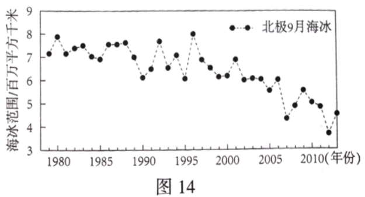

2020年北京市中考地理试题 · 选择题 第36、37、38、39、40题
1996年至今，袁隆平团队通过联合国粮农组织，向非洲一些国家示范、推广杂交水稻技术。图13为非洲杂交水稻试验基地分布示意图。读图，完成第35~37题。

36．在不同气候区设立试验基地，可研究杂交水稻
A．在雨林区的抗寒性B．在草原区的耐热性C．在沙漠区的抗旱性D．在高原区的节水性
37．非洲国家引进杂交水稻技术，主要是为了
A．增加水稻品种B．扩大水稻种植面积
C．提高粮食产量D．抵御当地自然灾害
近年来，极地海冰范围的变化引起人们的广泛关注。图14为1979~2013年间北极9月海冰范围变化图。读图，完成第38~40题。

38．北极地区有大范围的海冰体现了该区域
A．纬度高，气温低B．海拔高，光照强
C．陆地广，风力大D．海域小，降水足
39．1979~2013年间北极地区
A．淡水资源增多B．海域面积减小C．陆地植物减少D．适航范围扩大
40．开展极地地区的海冰研究有助于
A．研究全球气候变化B．改变极地生态环境
C．大量捕捞海洋生物D．开采极地矿产资源
璀璨文化耀京城